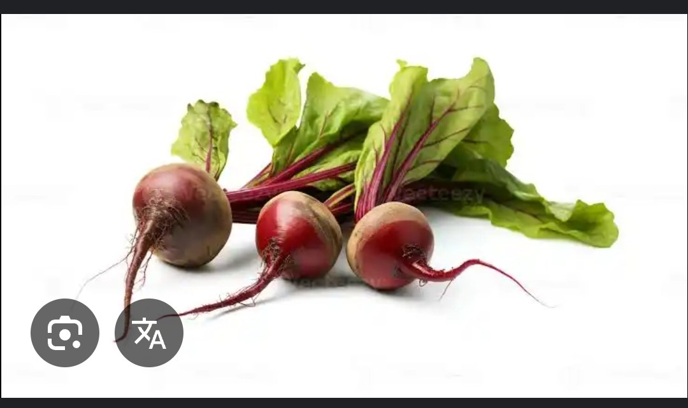

Hello Fellow Beetroot Lovers!
This is a page dedicated to this wonderful vegetable that stains not only your entire kitchen,
but also your beautiful hands.

Here are a few inspirational facts about This vegetable
- The plant is actually called beet, and just the tap root potionof the plant itself is called beetroot
- The colorful green part growing above the ground is called the beet greens
- other than as tasty food beets have also been used for food colouring and as a medicinal plant